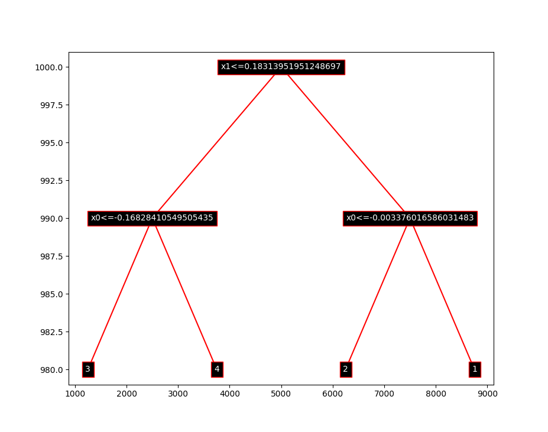

Decision Trees
This is a simple implementation of decision trees.
The interface is inspired by other popular machine learning libraries such as Keras and SKLearn, and hence the main DecisionTreeClassifier class has methods fit, predict, evaluate.
Overall Structure
The most significant parts of our implementation can be found in 6 files:
find_split.py (utils package): A utility file that provides functionality to identify the best attribute to split the dataset on. The find_split() function, defined in this file, is used by each node of the Decision Tree. It takes a dataset and returns an index of the attribute to split on, the value to split on in that attribute and the two partitions of data after the split is performed.
confusion_matrix.py (utils package): Another utility file that is used to compute the confusion matrix, using build_confusion_matrix(), and all the statistics associated with the confusion matrix, using stats(), to assess how well the Decision Tree is performing. These statistics include the recall, precision and F1-measure for each class (indicating which room the user is standing in).
evaluate.py: This file contains the k-folds cross validation algorithm that is used to evaluate the performance of trees with and without pruning. The function used for this evaluation is k_folds_cv() and it uses two helper functions, build_tree() and update_statistics(), build a tree and update the statistics calculated so far, in each fold of the algorithm.
node.py: The structure of the Node class is defined in this file. The Node class abstracts was designed to abstract away the internal tree representation and the logic associated with building a Decision Tree or using it for predicting the user's location. The functionality it provides ranges from generating child nodes (using _gen_nodes()) to being able to node specific pruning and evaluation functions.
decision_tree.py: This file defines the blueprint for the DecisionTreeClassifier class that outlines the public API required in order to provide a user with an interface to the root node of a Decision Tree. The functions available as a part of the API are fit, evaluate, predict, prune and plot_tree. Functionality to calculate the maximum depth of the tree is also provided in this class.
random_forest.py: The Random Forest Algorithm is implemented in this file as an extension to the task. It provides a very similar API to the DecisionTreeClassifier but does not provide a function to calculate the depth, as it generates a forest with many trees. This algorithm has a better performance on both the noisy as well as the clean datasets.
Instantiation and training
To use, first import (from top level of this folder, similar to what can be found in decisiontrees/evaluate.py)
from decisiontrees import DecisionTreeClassifier
dt = DecisionTreeClassifier()Then, simply fit (or train) the model on some data to generate a populated tree:
dt.fit(training_data)The input data format must be a 2-dimensional numpy ndarray, with the last column being integer labels. For example, with the given datasets in the coursework, you can do:
with open('data/clean_dataset.txt') as clean_dataset:
training_data = np.loadtxt(clean_dataset)Making predictions and evaluations
To make a prediction on some data (may be one query or even multiple queries), simply call the predict function:
dt.predict(test_data)where test_data is the exact same format as the training data, but without the last column (of labels).
There is also an evaluate function:
dt.evaluate(labeled_test_data)where labeled_test_data is the same format as training_data (i.e. it is labeled). What this will do is internally call predict on the features, then compare with the actual labels in order to compute accuracy, precision and recall (of each class), as well as a confusion matrix (as a numpy array, with predictions as columns and actual labels as rows). This is all returned as a dictionary.
For example:
>>> evaluation = dt.evaluate(labeled_test_data)
>>> evaluation['accuracy']
0.975
>>> evaluation['stats']
{
'recalls': [1.0, 1.0, 0.9878048780487805, 1.0],
'precisions': [1.0, 0.9857142857142858, 1.0, 1.0],
'f1': [1.0, 0.9928057553956835, 0.9938650306748467, 1.0]
}
>>> evaluation['confusion_matrix']
array([[79, 0, 0, 0],
[ 0, 69, 0, 0],
[ 0, 1, 81, 0],
[ 0, 0, 0, 70]])Note that the lists of stats are indexed by their class label minus one, i.e. the value at the 0th index of the precision list is the precision of class 1.
Tree Representations
You can also visualize the tree, using dt.plot_tree(), which will give you something like this:

Tree Height and Average Height
There is also a height method that calculates the maximum depth (also defined as height) of a decision tree.
>>> dt.height()
8Random Forest Model
We also wrote a Random Forest extension, under the RandomForestClassifier class. It has the exact same interface as DecisionTreeClassifier (apart from depth).
from decisiontrees import RandomForestClassifier
rf = RandomForestClassifier()
rf.fit(train_data)
predictions = rf.predict(test_data)Running a Custom Dataset
The main.py file is constructed to allow users to easily configure the setup to build the kind of tree they want on their own custom dataset.
from decisiontrees.evaluate import k_folds_cv
if __name__ == "__main__":
with open('data/clean_dataset.txt') as f:
data = np.loadtxt(f)
np.random.seed(50)
np.random.shuffle(data)
evaluation =\
k_folds_cv(data, k=10, validation=True)
print(evaluation["accuracy"])The configuration setup can be found at the end of the main.py file in the __main__ function. To replace the current setup with your own dataset, replace data/clean_dataset.txt with the path to your dataset (the working directory is assumed to be the top level directory of this repository).
A seed of 50 is currently used for the random shuffle of the dataset. This seed can be changed as required and for a different seed to be used for each run, the line np.random.seed(50) can be commented out.
The setup assumes a user would like to view the output of a k-fold cross validation using a Decision Tree generated by the DecisionTreeClassifier, with the option of pruning set to True. In order to run the sae evaluation without pruning, one simply has to set validation=False in the call to k_folds_cv().
An option to set the number of folds is also provided (the default being 10 as required by the spec). To customise this, k simply has to be set to the desired value in the call to k_folds_cv().
Finally, the format of the output (average of all the folds) of the function is a dictionary with keys as shown below:
{
"accuracy": accuracy,
"confusion_matrix": average_cm,
"statistics": average_statistics
}One can build their own Classifier (be it DecisionTreeClassifier or RandomTreeClassifier), train it, evaluate and make predictions from scratch as described above in the relevant functions and simply replacing all the code in the __main__ function with that code.